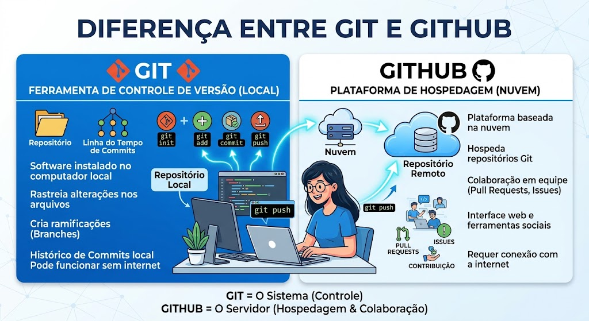

O GitHub é a plataforma web na nuvem onde os seus repositórios Git ganham vida colaborativa. Enquanto o Git cuida do histórico de versões no seu computador local, o GitHub centraliza o projeto na nuvem, permitindo que múltiplas pessoas trabalhem juntos, revisem o código dos colegas, organizem tarefas e evitem conflitos.
Antes de enviar a primeira linha de código para o grupo, é preciso preparar o terreno: criar sua conta no servidor remoto e configurar as chaves de acesso.
Por razões de segurança, o GitHub não permite usar sua senha tradicional para enviar comandos pelo terminal. Você deve configurar uma destas opções:
Para que todo o grupo possa alterar o mesmo repositório:
Com a equipe cadastrada, o próximo passo é conectar o computador de cada membro ao servidor do GitHub.
[Seu Computador (Local)] <--- git pull / git push ---> [GitHub (Nuvem)]

Se o projeto já foi criado no GitHub por um colega, você traz uma cópia completa para o seu PC: git clone https://github.com/usuario/nome-do-projeto.git
Se você começou o trabalho localmente e quer enviá-lo ao GitHub pela primeira vez: git remote add origin https://github.com/usuario/nome-do-projeto.git
Depois de fazer o git commit das suas alterações locais, envie-as para o GitHub: git push origin main
Antes de começar a trabalhar no dia, sempre baixe as alterações mais recentes enviadas pelos seus colegas: git pull origin main
Dica de ouro: Uma boa prática é sempre dar git pull no início do seu expediente de trabalho para evitar conflitos e não trabalhar em uma versão desatualizada do código!
Para evitar que duas pessoas alterem a versão principal (main) ao mesmo tempo e estraguem o projeto, adotamos o GitHub Flow.
Nunca faça edições diretas na branch main. Crie uma branch para cada tarefa (ex: feature-login, ajuste-relatorio): git checkout -b feature-login
Quando terminar sua parte e fizer o push da sua branch para o GitHub, você abrirá um Pull Request:
O processo em que a equipe analisa o trabalho do colega direto pela interface do GitHub:
Se você e um colega alterarem exatamente as mesmas linhas do mesmo arquivo em branches diferentes, o GitHub alertará um Conflito:
Além de hospedar código, o GitHub funciona como um centro de gerenciamento de tarefas para organizar prazos e entregas do grupo.
As Issues funcionam como cadernos de anotações e entregas do projeto.